Short Talks al Nòt 2026
Per il secondo anno consecutivo Short Talks porta al Nòt Film Fest la sezione Emilia Romagna Filmmakers, dedicata ai cortometraggi di autori della regione: sabato 29 agosto 2026, al C'entro Supercinema di Santarcangelo in sala Antonioni.
Programma
Primo blocco
-
Saluti da Rimini Lorenzo Ferrero · 12'
-
Lighèia Nicolò Ferrara · 18'
-
The Boy's Gaze Niccolò Salvato · 10'
Secondo blocco
-
Destiny Luca Canarecci · 13'
-
Migliori Amici Lorenzo Dellapasqua · 14'
-
Agata's Pact Alessio Petrillo · 15'
Terzo blocco
-
Cose Particolari Durante Le Messe Emma Gasparini Papotti · 14'
-
La Mancanza del Sedano Tomas Leardini · 16'
-
Songs of Salt Isabella Bazoni · 10'
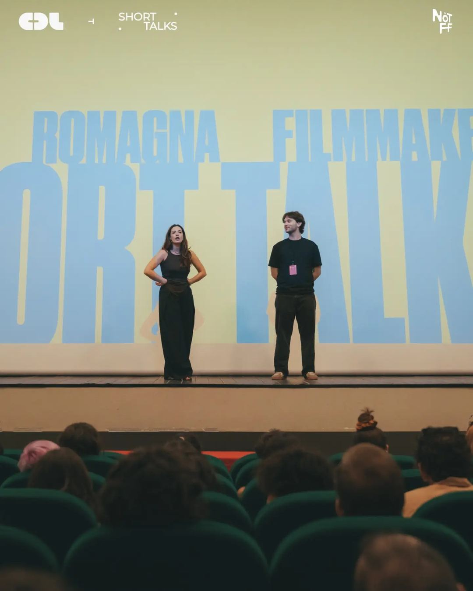
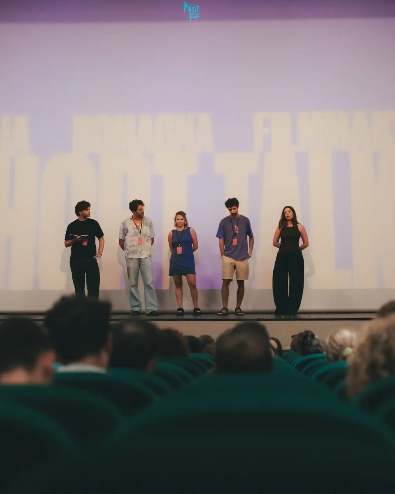
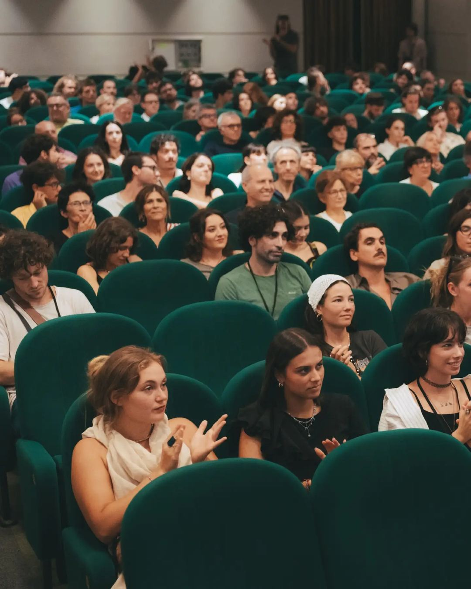
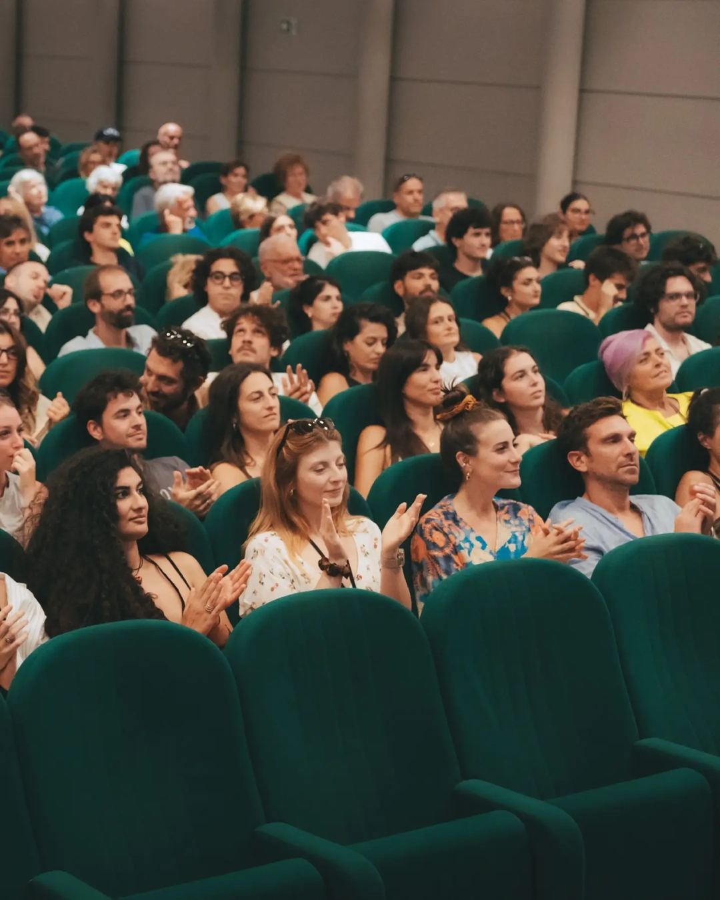
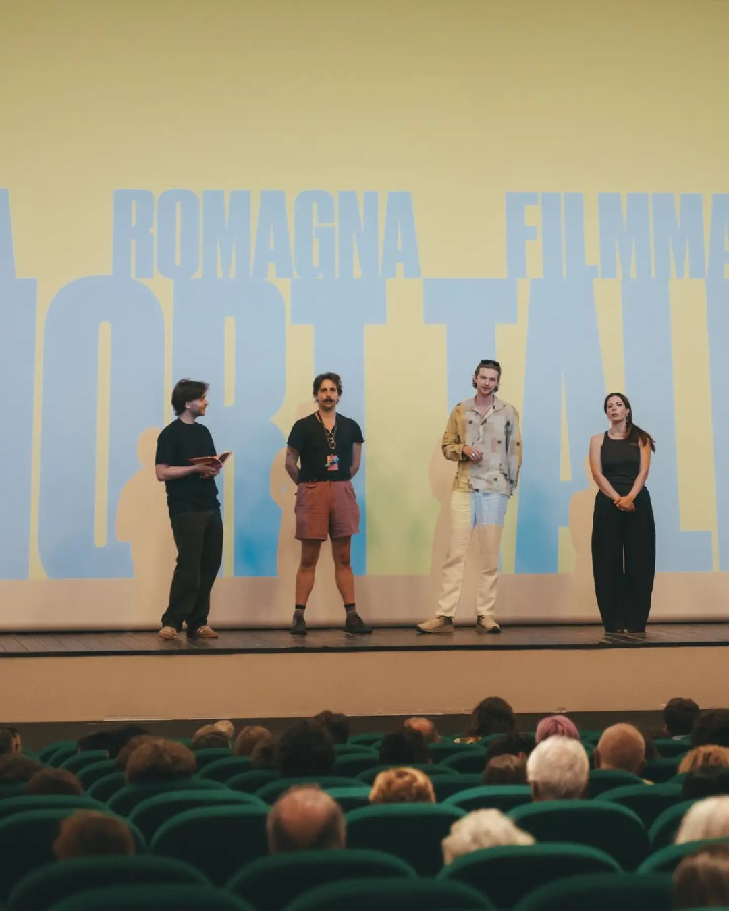
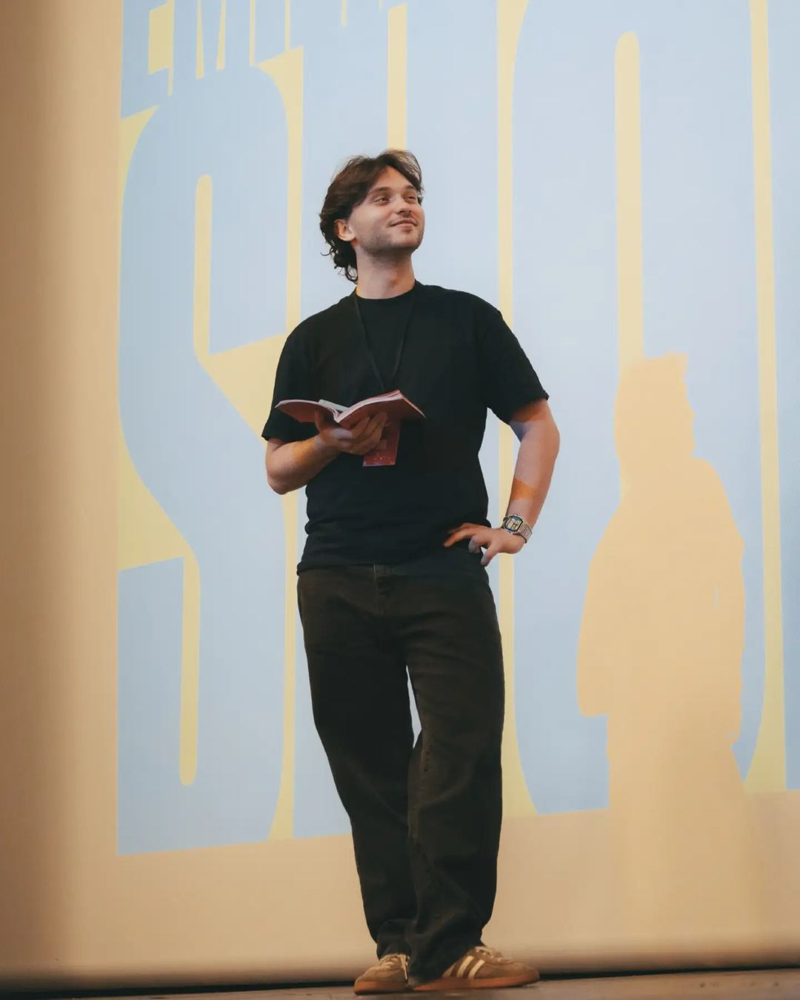
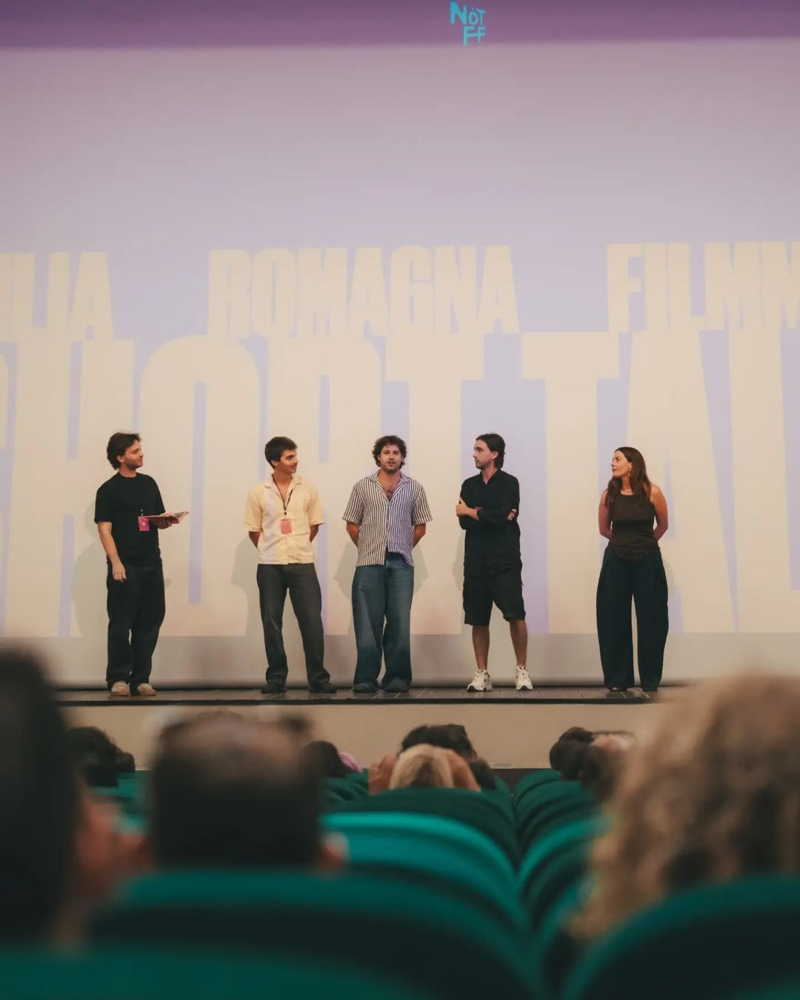
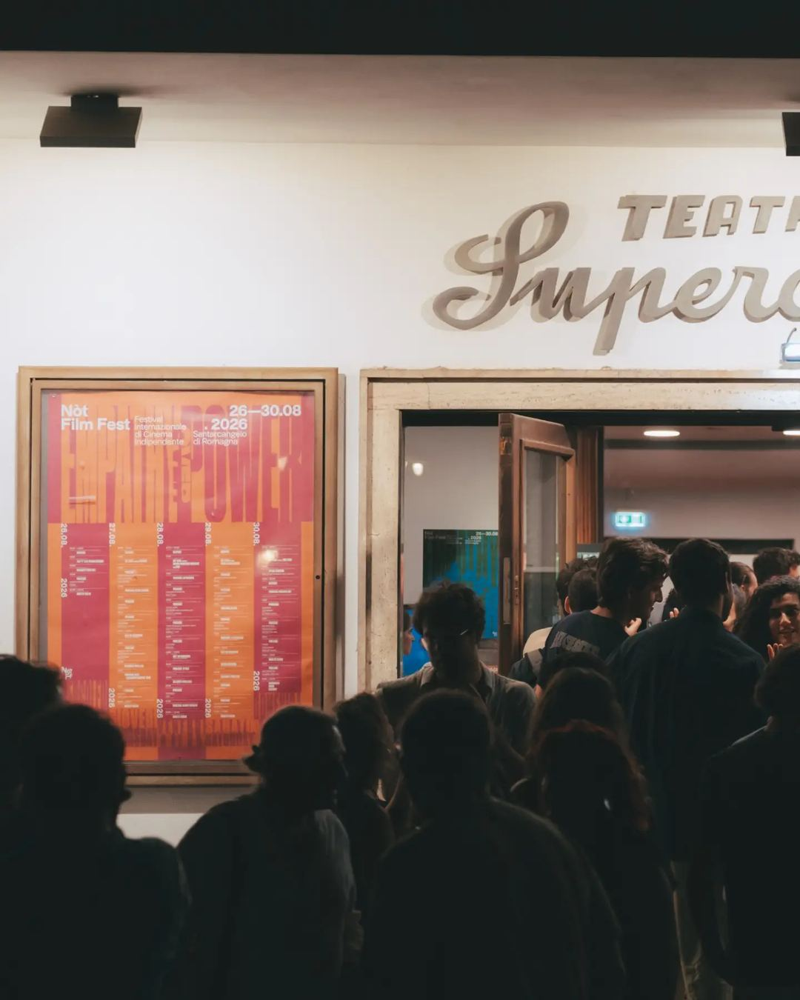
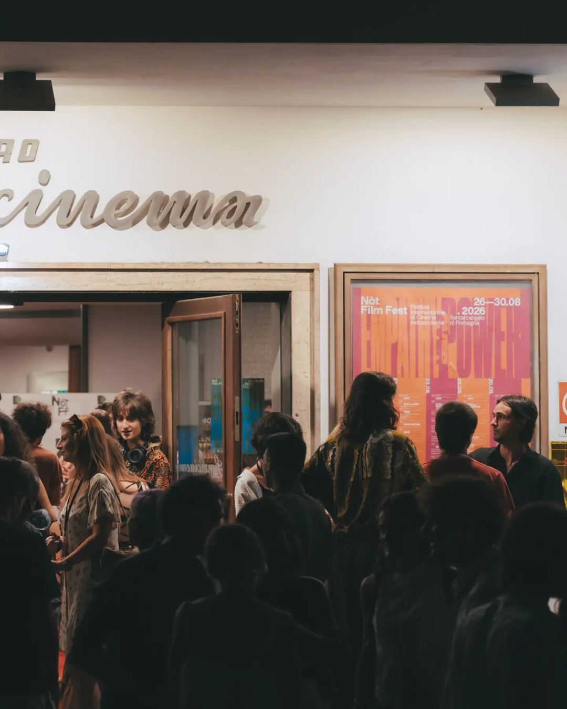
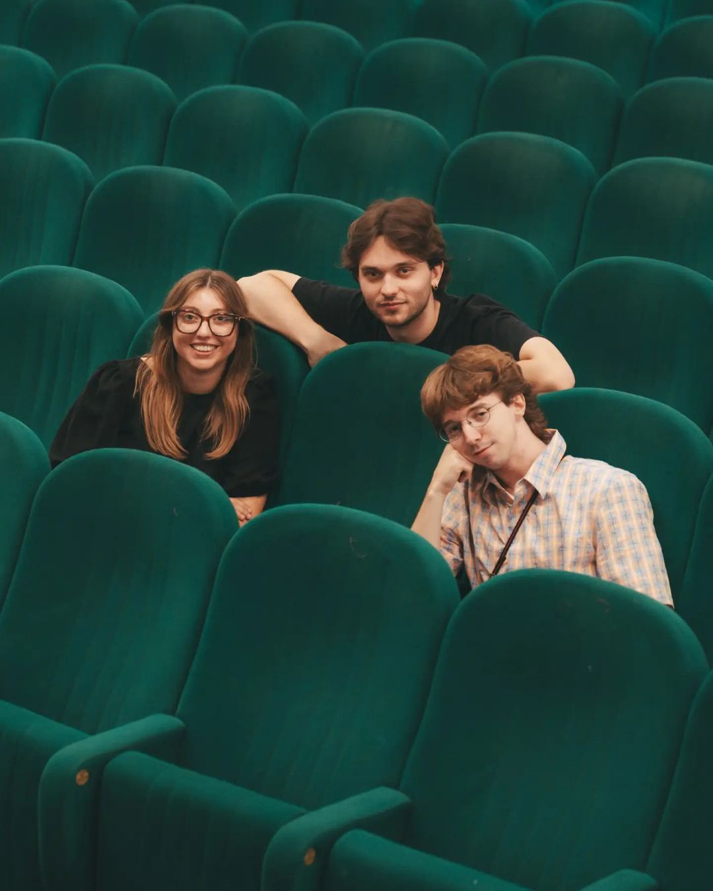
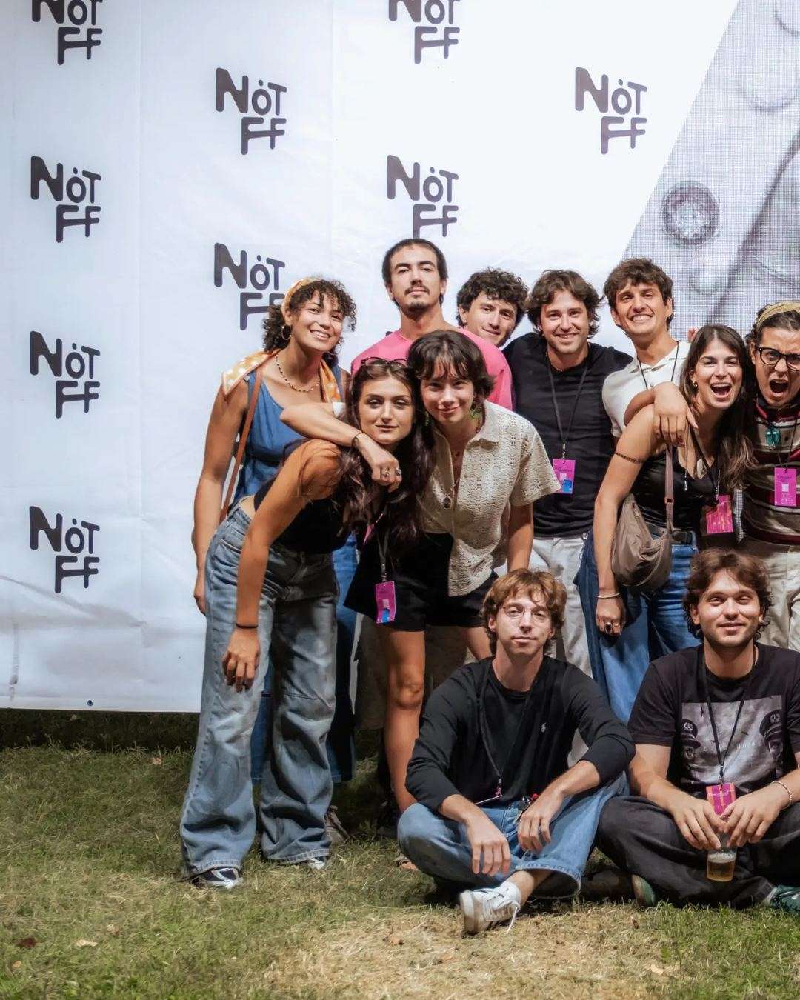
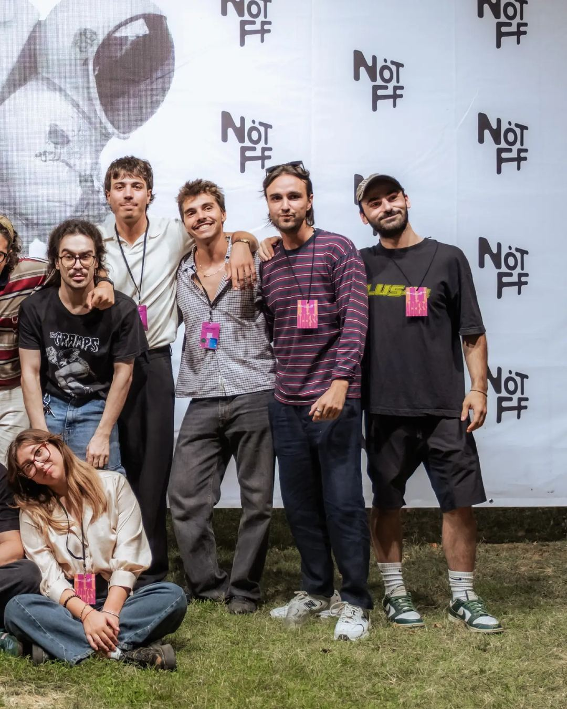